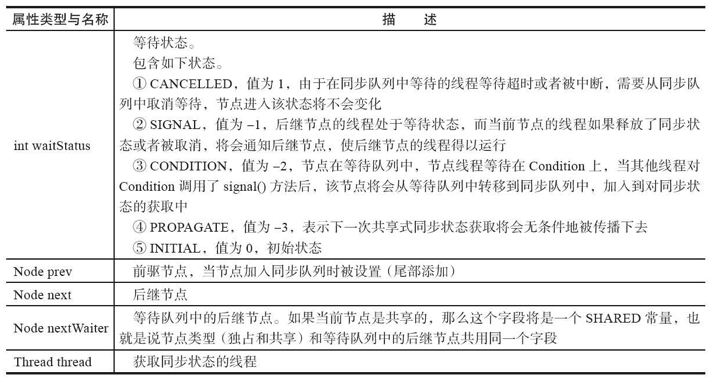
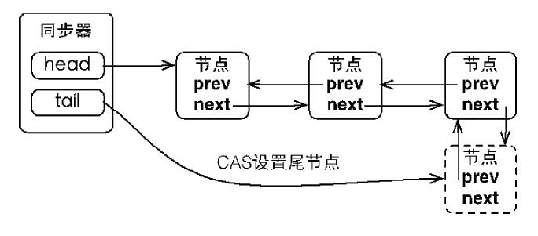

AbstractQueuedSynchronizer是实现Lock锁的同步器，使用了双向链表结构来存放被阻塞的线程,同步器的主要使用方式是继承，子类通过继承同步器并实现它的抽象方法来管理同步状态，在抽象方法的实现过程中免不了要对同步状态进行更改，
这时就需要使用同步器提供的3个方法getState()、setState(intnewState)和compareAndSetState(intexpect,intupdate)来进行操作，因为它们能够保证状态的改变是安全的。
AbstractQueuedSynchronizer 如何实现了线程之间的可见性?，如synchronized是通过插入内存屏障指令
AQS使用一个整型的volatile变量state来维护同步状态,根据volatile内存语意，一个线程的写可见于其他线程对它的读，在通过内存模型传递性关系来实现两线程之间可见性，如
Lock lock = new ReentrantLock() ;
public void setLock(){
a = 10 ;
lock.lock();
try {
a = a*2 ;
// ......
}finally {
lock.unlock();
}
}
假设线程A获取到锁先执行，其次线程B被阻塞在队列中，等待A的唤醒，在A释放锁后a = 20 ，但是线程B的缓冲中存放还是a=10,随后B获取成功，执行结果是多少？
内存模型规则：如果A可见于B 且B可见于C 那么A对C是可见的 volatile语意 A操作state对B是可见的，同时a对A是可见的，那么a对B也是可见的。
节点（Node）
同步队列中的节点（Node）用来保存获取同步状态失败的线程引用、等待状态以及前驱和后继节点，节点的属性类型与名称以及描述如表

同步器将节点（获取失败的线程）加入到同步队列的过程

为什么要使用cas 方式设置尾节点而首节点不需要？
- 试想一下，当一个线程成功地获取了同步状态（或者锁），其他线程将无法获取到同步状态，转而被构造成为节点并加入到同步队列中，而这个加入队列的过程必须要保证线程安全，因此同步器提供了一个基于CAS的设置尾节点的方法：compareAndSetTail(Nodeexpect,Nodeupdate)，它需要传递当前线程“认为”的尾节点和当前节点，只有设置成功后，当前节点才正式与之前的尾节点建立关联。
- 首节点都是通过尾节点设置成功了，由释放锁的线程唤醒不存在数据竞争故单线程